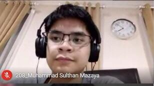
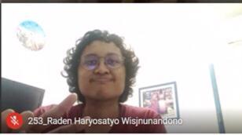

-
KRU

James Chandra
JURUSAN : Informatika
ANGKATAN : 2019
NOTE :
kak james sedang magang di TaniHub, lalu dia juga berencana untuk daftar menjadi ketua di DSC 2020. terakhir kalo ga salah ada pesan "Nathaniel Jason PHP" -
KRU

Nathaniel Jason
JURUSAN : Informatika
ANGKATAN : 2019
NOTE :
ka jason sedang menjalani magan di Bukit Vista dan dia juga sebenernya member TEC juga tetapi udah tidak lagi. pesannnya dari kak james itu "tetap semangat dan jangan skip day dan kerjakan semua tugasnya -
Ca-Kru
Sultan mazaya
Fakultas : FTI
ANGKATAN : 2020
NOTE :
mazaya sebenarnya sudah masuk peminatan teknik fisika. mazaya juga sering mengikuti acara kepanitiaan dan perlombaan. mazaya masuk ARC karena ingin meningkatkan skill WebDev nya dan nambah relasi -
Ca-Kru
Michael Herman Kahari
Fakultas : STEI
ANGKATAN : 2020
NOTE :
Michael berencana untuk masuk ke jurusan Informatika. funfact dari michael adalah walaupun selalu keos tapi tidak dicicil. alasan dia masuk ARC adalah ingin mempelajari WebDev lebih lanjut -
Ca-Kru
Raden Haryosatyo
Fakultas : STEI
ANGKATAN : 2020
NOTE :
funfact dari raden adalah dia gabisa makan bihun, lalu dia juga ingin masuk ke jurusan informatika atau elektro. dia ingin masuk ARC karena ingin bisa bikin hal yang bisa dilihat hasilnya -
Ca-Kru

Anggoro Maliky
Fakultas : STEI
ANGKATAN : 2020
NOTE :
dia berencana untuk masuk ke jurusan Informatika atau STI. dia ingin masuk ke unit ARC karena ingin memperdalam WebDev dan butuh unit untuk ngisi waktu